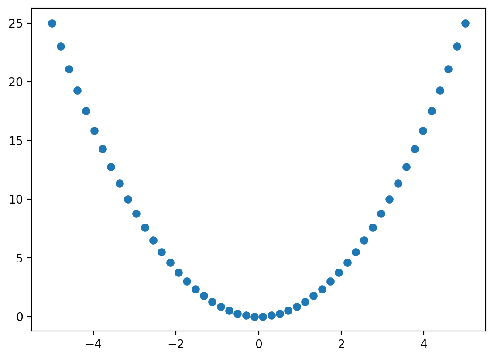

CSCI 5302 - Final Project
1 Introduction

1.1 Concept and Motivation
Customers, when searching for products with specific features and aspects, need sufficient information to make a decision as to whether to procure a specific product. (Information on search products vs. experience vs. mixed). When a product is more in the directon of experience vs. search-based, other customers’ experiences can shed light on its features and return on investment than information directly from the vendor can. Having reviews from reliable sources with sufficiently detailed information can enable greater confidence in a purchase, improved customer satisfaction, and smooth the process of ecommerce for customers.
We seek to expound upon the research of paper reference here to explore additional recommended research areas, in the direction
1.2 What / Where
(Citation) provided the following areas for recommended additional research at the conclusion of their paper:
Expand the number of products beyond 3 items (one search, one experience, one mixed)
Explore customer metadata for classifying reviewer types
We seek to explore Item #1 and #2 above and explore the possibility of assessing a scale for products to determine the extent to which they are a search-based or an experience-based product. We’ve explored additonal research from other teams to identify additional potential methods
We seek to examine additional products and product types between multiple e-commerce websites (BestBuy, Target, Amazon).
1.3 Why It Matters
Feedback from customers is beneficial, but it is not always ordered by the most informative or beneficial feedback first. Certain features of data such as… can impact the usefulness of the feedback on a customer-by-customer basis. Level of detail, star-rating, and number of votes that support the review as being useful to a customer can all help determine its usefulness to other customers. Were e-commerce
Examining additional product types can enable the generalization of the authors’ methodology to other products. Furthermore, the exploration of a sliding scale for search vs. experience-based products can further support generalization and business goals. Producing a reliable scale and methods for classifying a products’ degree of being experienced-based can inform vendors on:
How to best sort product reviews
Examine what are the most helpful reviews to know the performance of the product alongside customer experience and sentiment
Adjust the product, its marketing, or future production based upon market efficacy.
1.4 Literature Survey
Additional commentary on original paper here
Paper(s) on product classification (search-experience-mixed)
Paper(s) on user/consumer/reviewer classification
All papers you’ve found, provide a summary of what they did and any key results
1.5 Research Questions
Can the model from (original paper citation) be generalized with
larger volume of products and product types?
a sliding scale weight for degree to which a product is a “search” (0) or “experience” (1) product?
Adding modifiers to review content based upon:
- Customer / Reviewer Reliability?
Can products be classified on degree of search or experience (need other research that can tell us what features of a product determine what makes a product a search vs. experience product) using:
Which of the 5 senses the product engages?
a. Feature 1
b. Feature 2
c. Some combination of features?Can different natrual language processing libraries provide a better fit for the Review Content metric itself?
1.6 Goals / Definition of Success
Replicate similar results to (original paper citation) with similar product types
Expound upon (original paper citation) with additional products, including:
Original products from (paper): Digital Music, Video Game, and Grocery Item
Additional products (Amazon and Target): Furniture Items, Clothing Items, Home Appliances, Books, Cosmetics, Cleaning supplies?
Additional Proucts (Amazon, Target, BestBuy): Electronics.
Verify goodness of fit of original model
Determing best metrics and/or modifiers for Review Content and Customer Reliability
Achieving similar or better fit than original paper’s modeling; extrapolate to other product types.
This is where our abstract will go.
Here’s an example of inserting a plot directly into our paper
Here’s an example of pulling some data in from our github repo